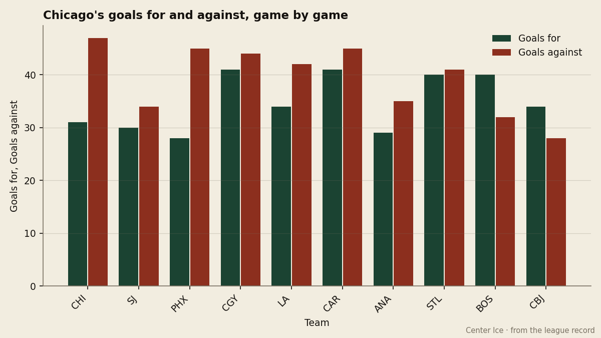
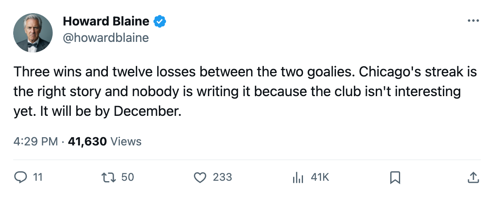
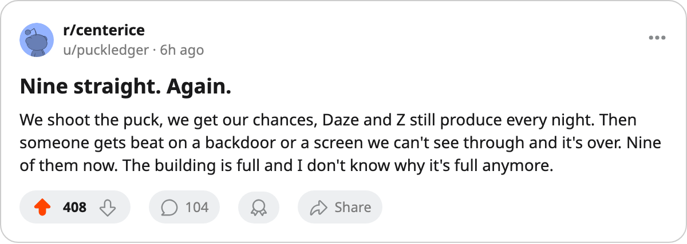

Nine and None: Chicago Has Lost 9 Straight on a Goaltending Staff That Is 3 and 12
The Blackhawks score enough to win. Neither of their goaltenders has made that true since October 26.
 Howard BlaineSenior writer, The Blaine Rankings · The Hockey Gazette
Howard BlaineSenior writer, The Blaine Rankings · The Hockey GazetteThe  Chicago Blackhawks Blackhawks have lost 9 consecutive games, the longest active streak in hockey. The next-longest belongs to
Chicago Blackhawks Blackhawks have lost 9 consecutive games, the longest active streak in hockey. The next-longest belongs to  San Jose Sharks and
San Jose Sharks and  Phoenix Coyotes, both at 4. Chicago last won on October 26, 4-3 at Carolina, and has gone 0-6-3 since. The club sits 2-8-4 through 15 games with 10 points, 14th in the West, 7 points behind the 8th-place club.
Phoenix Coyotes, both at 4. Chicago last won on October 26, 4-3 at Carolina, and has gone 0-6-3 since. The club sits 2-8-4 through 15 games with 10 points, 14th in the West, 7 points behind the 8th-place club.
Ari Ahonen is 2-6-0 in 9 starts. Jocelyn Thibault is 1-6-0 in 8. Together the Blackhawks' goaltending staff has produced 3 wins and 12 losses, a record no starter on any other club in the league carries on his own. Neither appears on the Bureau's goaltender leaderboard. The committee, if that word means anything with a .200 win percentage between two men, is the worst in hockey.

What makes the streak bearable to watch and impossible to fix is that Chicago is not a bad offensive team.  Eric Daze85 has 15 points in 15 games on a $3.00M salary. Alexei Zhamnov has 14. Theoren Fleury, on a contract with 5 years remaining, has 10. The three carry the entire offense. Chicago generates 21.00 shots a night, 12th in the league. They outshot
Eric Daze85 has 15 points in 15 games on a $3.00M salary. Alexei Zhamnov has 14. Theoren Fleury, on a contract with 5 years remaining, has 10. The three carry the entire offense. Chicago generates 21.00 shots a night, 12th in the league. They outshot  St. Louis Blues 22-19 on October 27 and lost 2-5.
St. Louis Blues 22-19 on October 27 and lost 2-5.
Chicago manufactures enough offense for a one-goal game and has no goaltender who can close one out. Six of the nine losses came with Chicago scoring exactly 2 goals. Two of those went to overtime. In a league where a single stop at 2-2 buys a point, Chicago has not gotten one.
The cost side of the streak
Chicago's $48.74M payroll ranks 27th in the league, but its cost per point of $4.87M ranks 4th-worst, ahead of only Phoenix Coyotes at $6.93M,  Ottawa Senators at $6.59M, and San Jose Sharks at $5.10M. The club generated $42.36M in revenue and turned a profit of $25.79M despite the record, because 15,783 people still fill the seats at $79 a ticket.
Ottawa Senators at $6.59M, and San Jose Sharks at $5.10M. The club generated $42.36M in revenue and turned a profit of $25.79M despite the record, because 15,783 people still fill the seats at $79 a ticket.
Two expiring names and a window that is closing
Daze's deal has 0 years left. Zhamnov's does too. Between them they account for 29 of Chicago's 31 goals and roughly half the club's production. Neither is 28. The Blackhawks' front office faces a February decision on whether to sell two players who are carrying an offense that the goaltending will not protect, or to watch the contracts walk in April and rebuild around Igor Radulov78, a 23-year-old with 9 points in 15 games and a form rating of +11 on the Index.
The road ahead does not help. Chicago plays at  Washington Capitals on November 15, at
Washington Capitals on November 15, at  Nashville Predators on November 17, at
Nashville Predators on November 17, at  Edmonton Oilers on November 19, and at
Edmonton Oilers on November 19, and at  Vancouver Canucks on November 20. Four games in six days on the road, against clubs whose combined record in that stretch should be enough to test whether either goaltender can carry a start.
Vancouver Canucks on November 20. Four games in six days on the road, against clubs whose combined record in that stretch should be enough to test whether either goaltender can carry a start.
The standings at Christmas are the standings in April, and Chicago is not going to be a playoff club this year. The question this desk is logging is narrower: whether the Blackhawks extend this streak to double digits before the November road trip ends. Chicago's points-per-game rate sits at 0.67, the lowest in the league. On that pace, the Blackhawks would finish with 55 points, which would break the single-season record for futility in this league's short history. The streak will end, though whether it ends before the calendar turns is the logged prediction.
"It feels like seven games," Pittsburgh's Eric Lippmann said of his own winning streak on The Tunnel this week, which is Pittsburgh's way of saying nothing. Chicago's locker room has no such luxury, and they are counting losses now.

